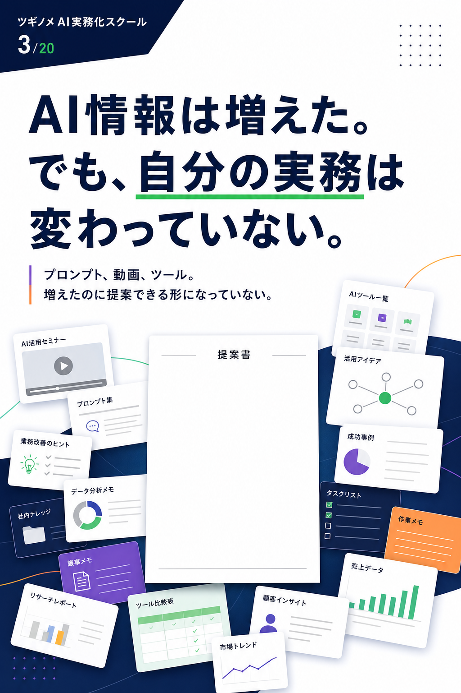
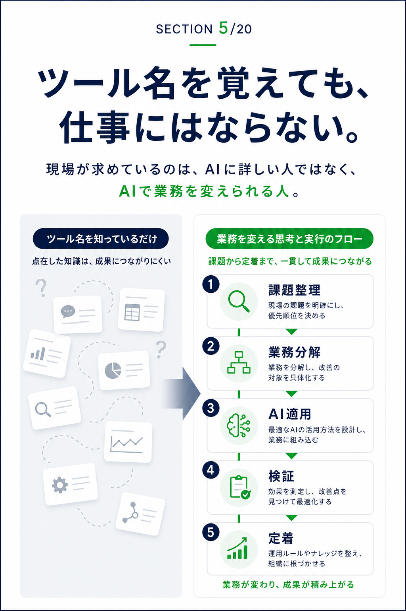
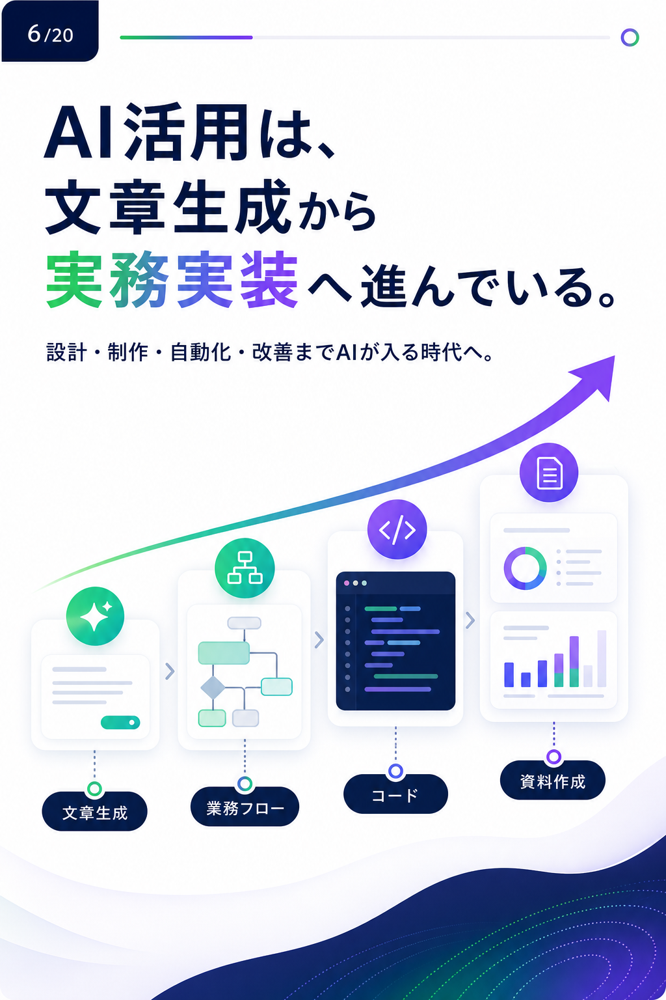
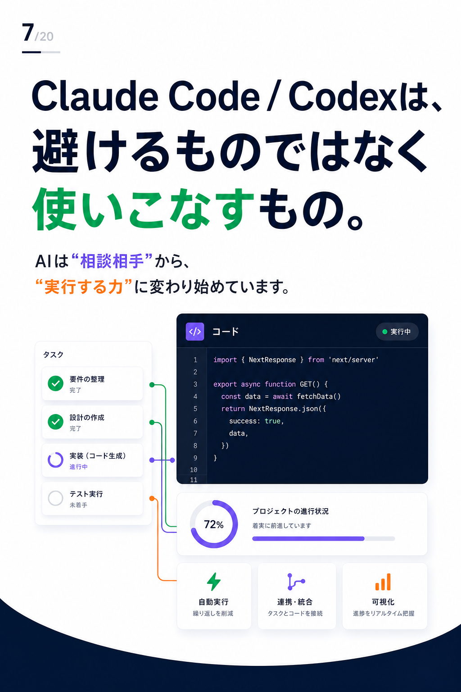
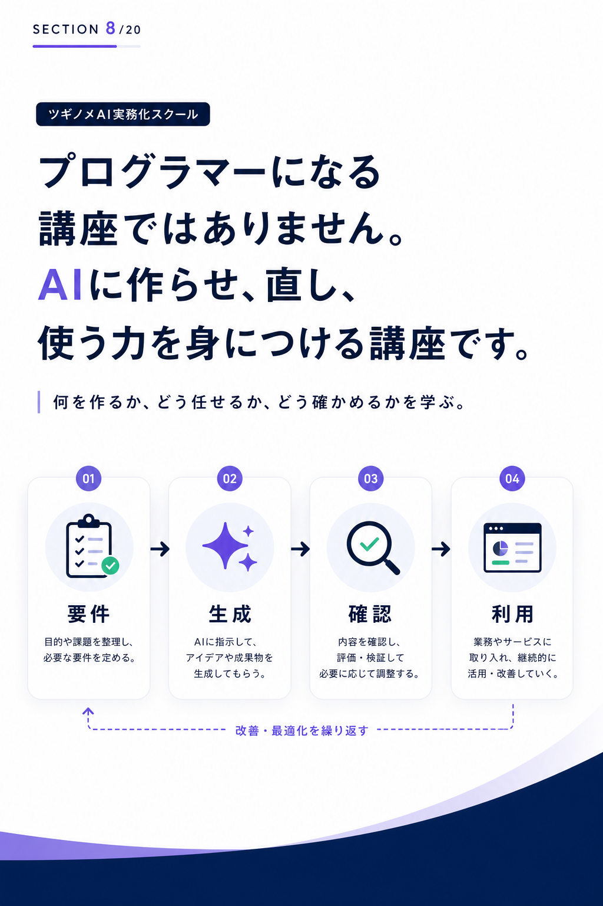
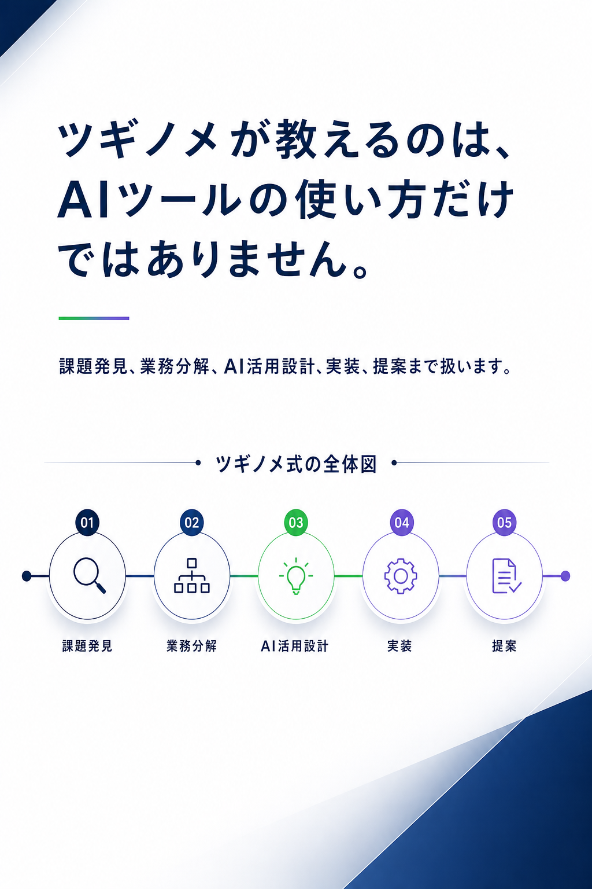
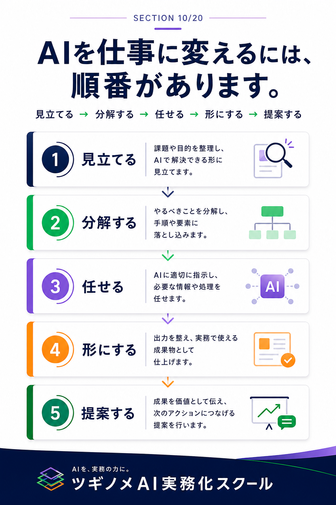
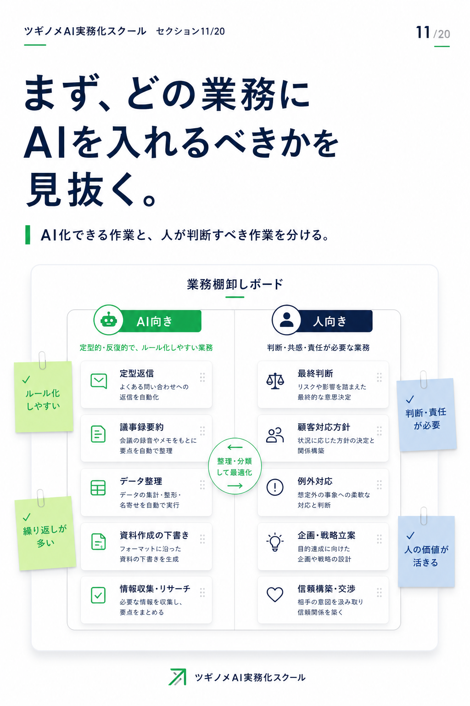
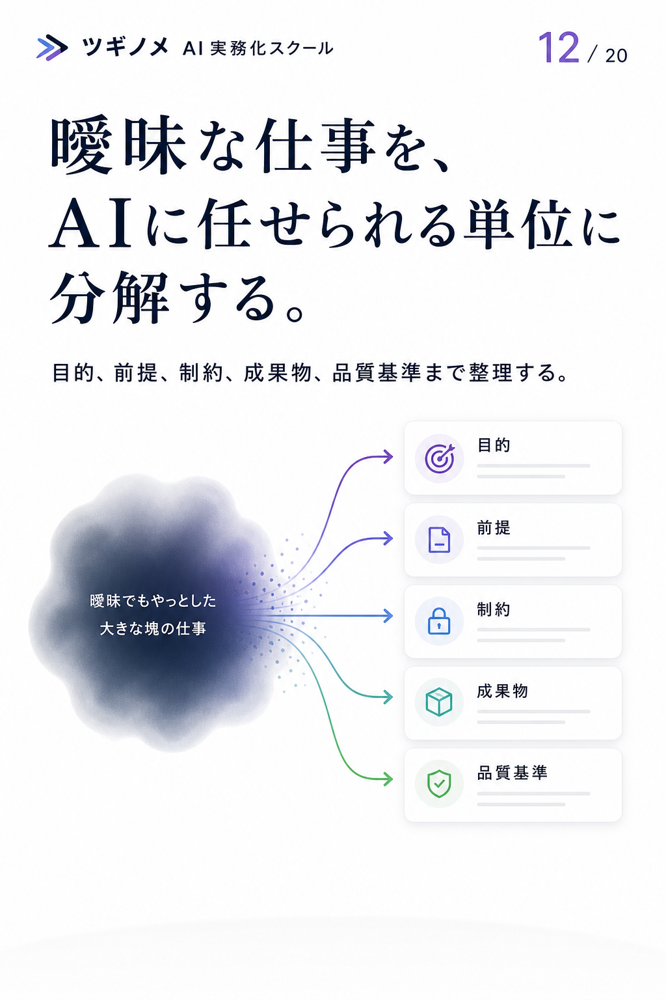
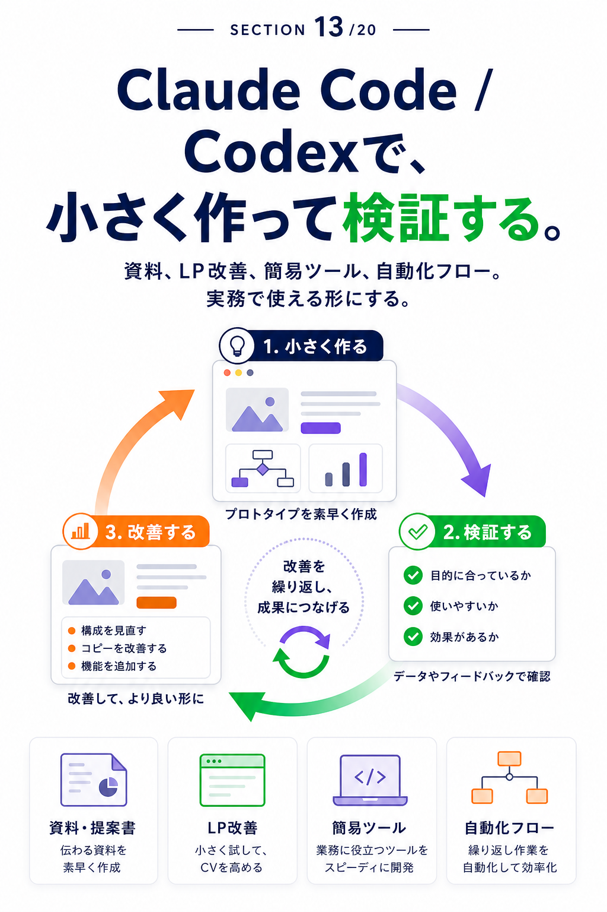
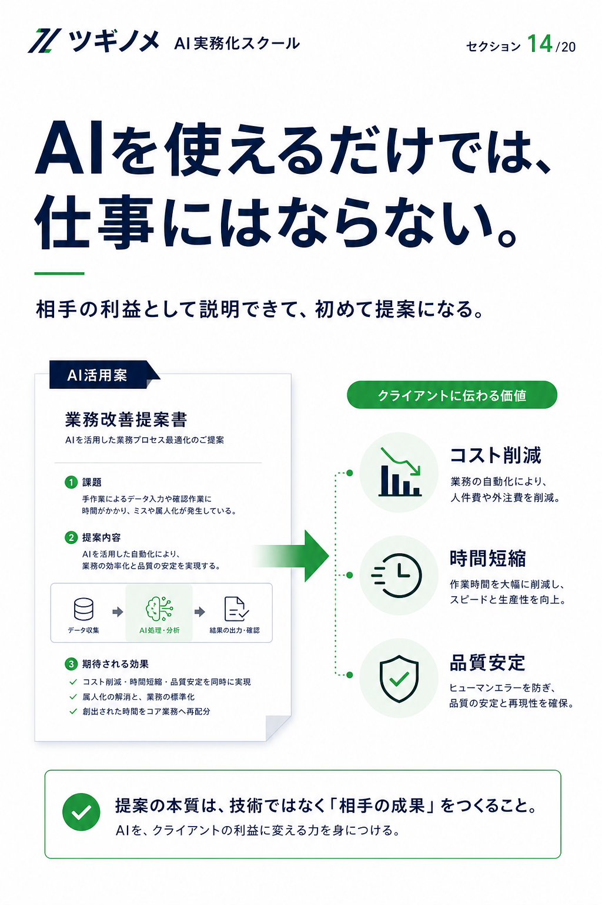
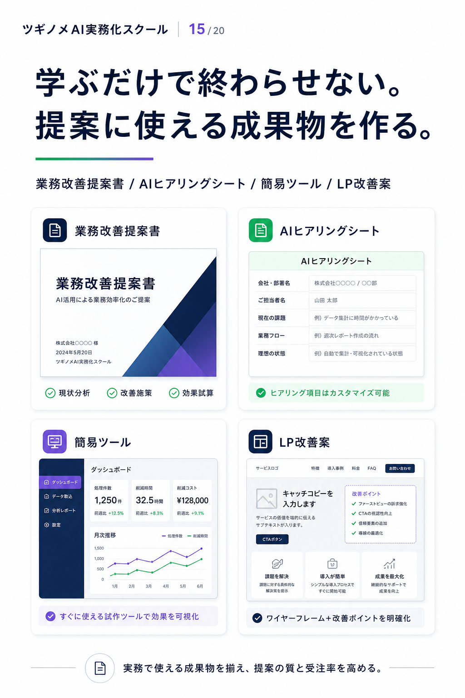
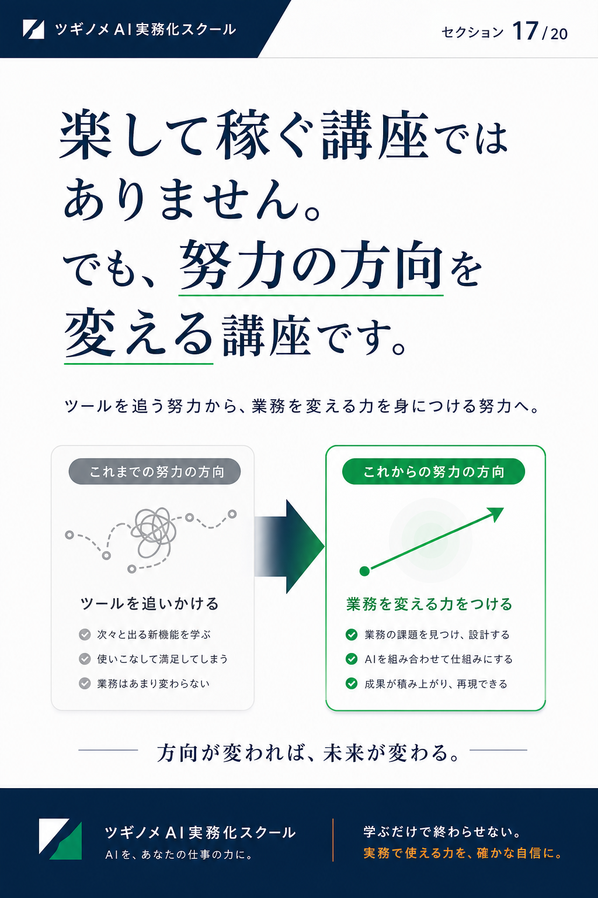
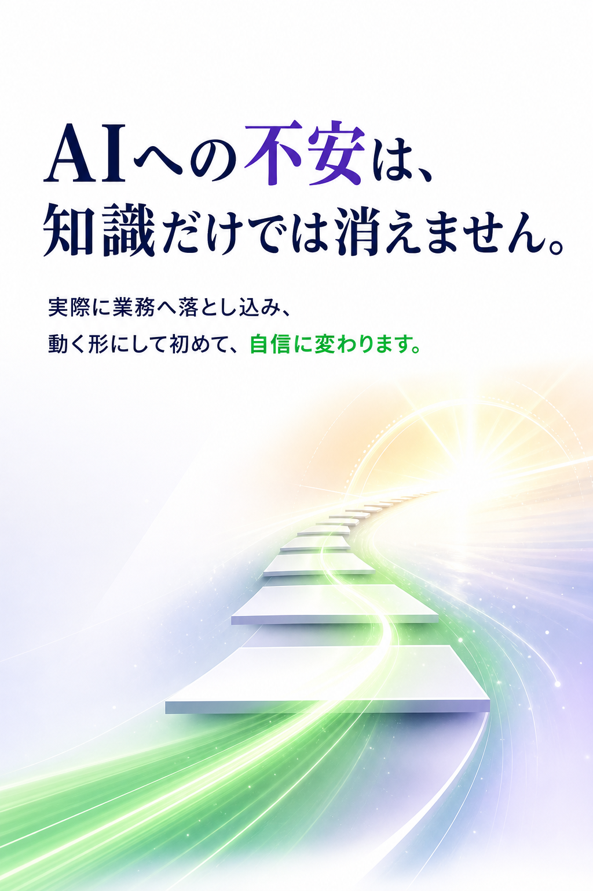
無料スターターキットを
受け取る
Claude Code / Codex時代に、AIを提案・実装・納品へ変えるための最初の資料セットです。
✓ AI実務化ロードマップ
✓ Claude Code / Codex 入門ガイド
✓ 関西フリーランス向けAI案件アイデア集
✓ AI業務改善提案テンプレート
✓ 納品前品質チェックリスト
※公式LINE URL確定後、このリンクを差し替えます。